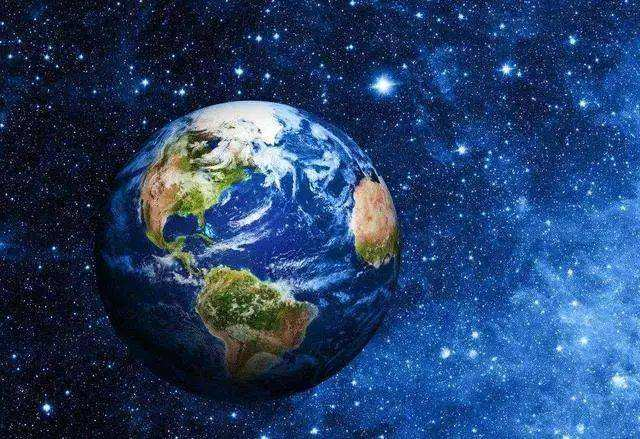

<!--  border-radius: 50%; -->
<div class="circle"></div>

<div class="circle1"></div>

<div class="circle2"></div>


<map name="imagemap">
  <area shape="circle" coords="50,50,30" href="link1.html" alt="区域1">
  <area shape="rect" coords="100,100,200,200" href="link2.html" alt="区域2">
  <area shape="poly" coords="300,300,350,350,400,300" href="link3.html" alt="区域3">
</map>

<!-- svg -->
<svg width="200" height="200">
  <circle cx="100" cy="100" r="50" fill="red" />
</svg>


<style>
  .circle {
    width: 100px;
    height: 100px;
    border-radius: 50%;
    background-color: red;
    cursor: pointer;
}
.circle1{
  width: 100px;
  height: 100px;
  border-radius: 50%;
  background-color: red;
  cursor: pointer;
  transform: scale(1);
}
.circle2 {
  width: 100px;
  height: 100px;
  position: relative;
}

.circle2::before {
  content: "";
  display: block;
  width: 100%;
  height: 100%;
  border-radius: 50%;
  background-color: red;
  cursor: pointer;
}
</style>